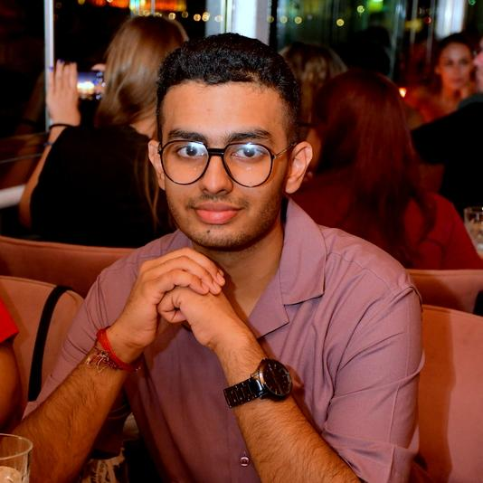

| Name:Pranav-Ajay |
| Age:20 |
| Ambition:Data Analyst |
| ICSK | 2009-2023 |
| RSET | 2023-2027 |
My main ambition was to get a job in the field of bioinformatics. Ever since I joined college, my interest has been shifting a bit to statistics. I just love playing with data. Since I also know some programming languages, I would presently prefer a career as a data scientist or a data analyst. Maybe just a statistician too. My interest keeps changing based on anything new I encounter. It might not sound appealing, but in today's world people keep switching their professions at one point of their life. Hence, there is some thrill in our life. My present goal is to get a decent CGPA, go for higher studies, and then focus on a good type of profession.
I am Pranav Ajay. I am a 19-year-old teen from Kerala, India and I am presently pursuing my bachelor's degree in Artificial Intelligence and Data Science. I did my entire schooling in Kuwait, which is a country in the GCC. I was born in India and brought up in Kuwait. The lack of exposure to our Indian environment led me to pursue my college education in India. I am on the track of learning my subjects so that I get a chance to contribute something in this vast world. Being brought up in Kuwait doesn't make me feel different as I was amongst our own community or in general the South Asian community in Kuwait. I had studied in an Indian school named ICSK. I was a bio-maths student in my senior secondary.